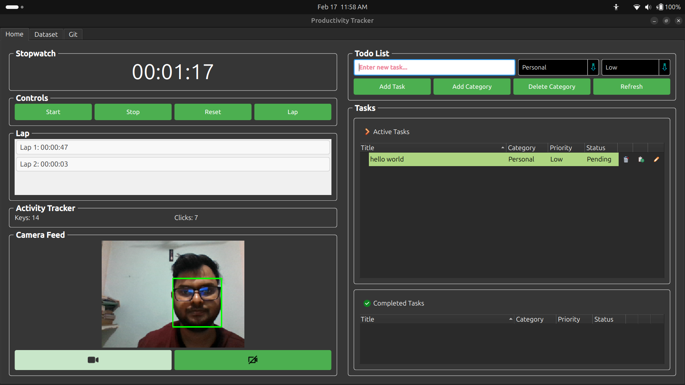
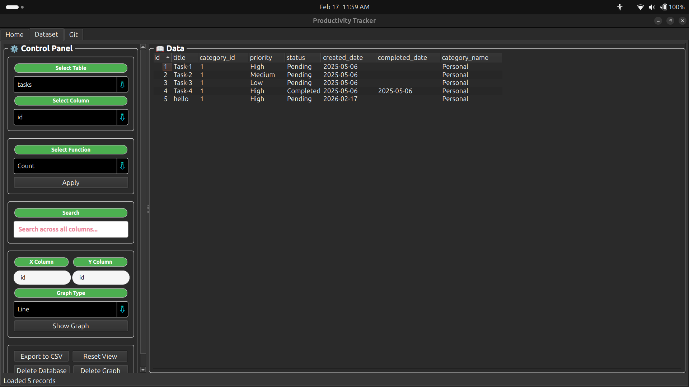
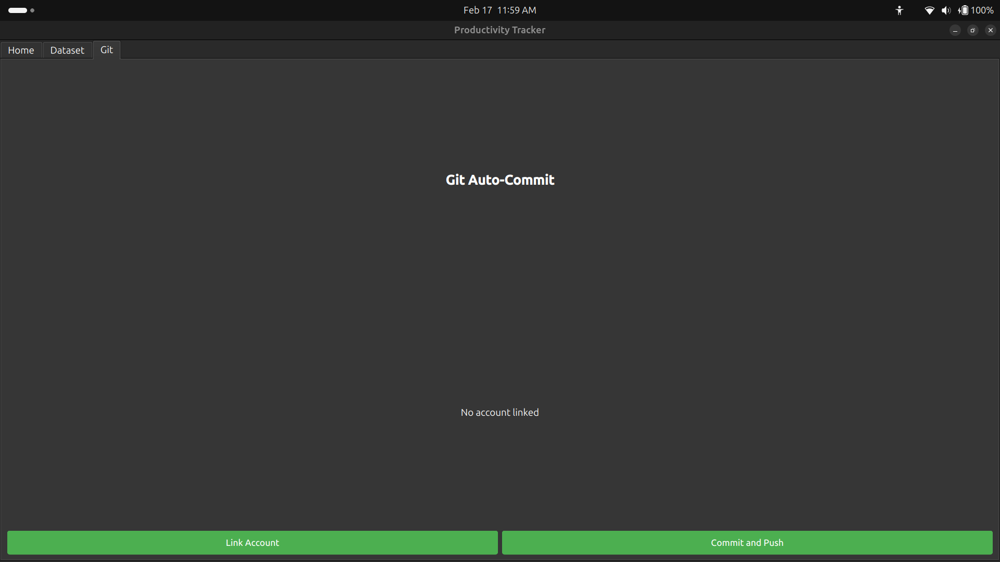

AI face detection and input monitoring combine to give you an honest picture of your productivity — then sync your daily logs to GitHub automatically.
Six tightly integrated modules that replace guesswork with real data.
MediaPipe BlazeFace detects when you sit down and when you leave. The productivity timer starts and stops automatically — no button pressing required.
Global keyboard and mouse event tracking distinguishes focused work from idle time. Supports both X11 (pynput) and Wayland (evdev) sessions natively.
Create, edit, categorize, and advance tasks through Pending → Working → Completed workflows without leaving the app.
Visualize daily, weekly, and custom-range trends with embedded PySide6 QtCharts graphs. Toggle between raw data tables and visual charts.
On every session close, your daily Markdown log is committed and pushed to a configured GitHub repository — keeping your contribution graph green.
Zero data leaves your machine. Camera frames are processed in-memory for face detection only. No images, no telemetry, no cloud dependency.
A simple three-stage pipeline that runs entirely on your local machine.
Your webcam feed is analyzed frame-by-frame using MediaPipe's BlazeFace model. When a face is detected, the session timer begins. When you leave, it pauses — automatically.
Global input listeners capture keyboard and mouse events to calculate engagement metrics. Combined with face presence, this gives a true "active work" measurement.
Every 10 minutes, data is auto-saved to a local SQLite database. On exit, a Markdown log is generated and pushed to your GitHub repository.
A clean, tab-based interface with three focused workspaces.

Real-time stopwatch with live face detection status and an integrated TODO list.

Historical data viewer with toggle between raw tables and interactive QtCharts graphs.

Configure your GitHub account and repository for automatic commit-and-push sync.
No external services. No cloud subscriptions. No tracking SDKs.
Download the AppImage for a zero-install experience, or check the User Guide for a full walkthrough.